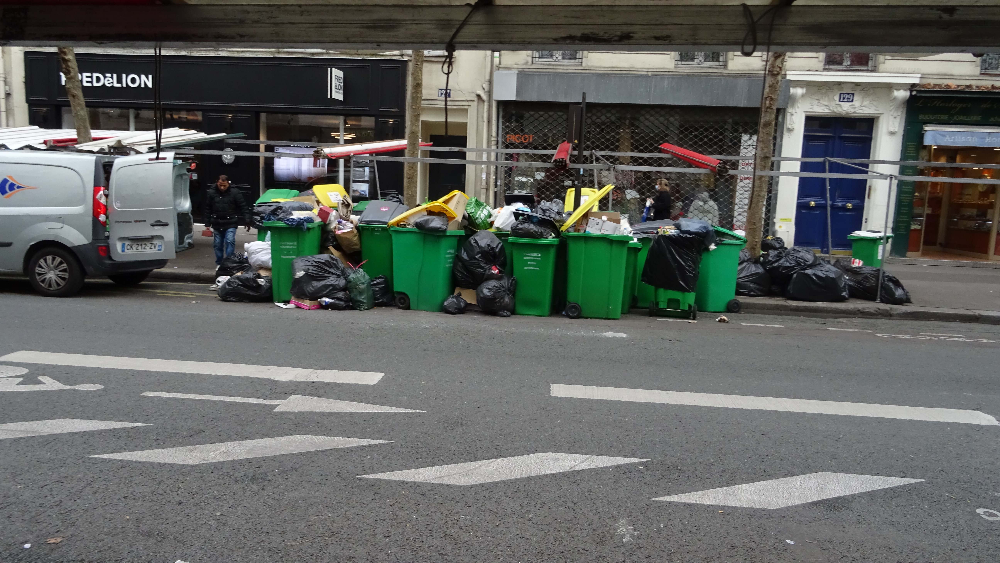

La France est réputée pour sa riche histoire, sa gastronomie renommée, ses arts, sa ""mode"" et ses traditions. Le pays est souvent associé à la ""romance""(enfin), avec ses ""magnifiques"" paysages(de poubelles à Paris).
La culture française est très diversifiée, allant du carnaval aux aux oeuvres littéraires. La passion pour le vin et la célébration de la vie sont des aspects intégrants de la culture française.
Il est important de reconnaître que les préjugés et stéréotypes ne représentent pas la réalité complète de la France. Mais il est vrai que parfois, certains préjugés ou stéréotypes soient vrais.
Les clichés sur la nourriture, le style de vie décontracté et l'amour de la philosophie peuvent être fondés⚠️⚠️⚠️